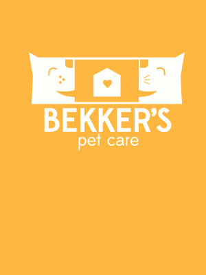
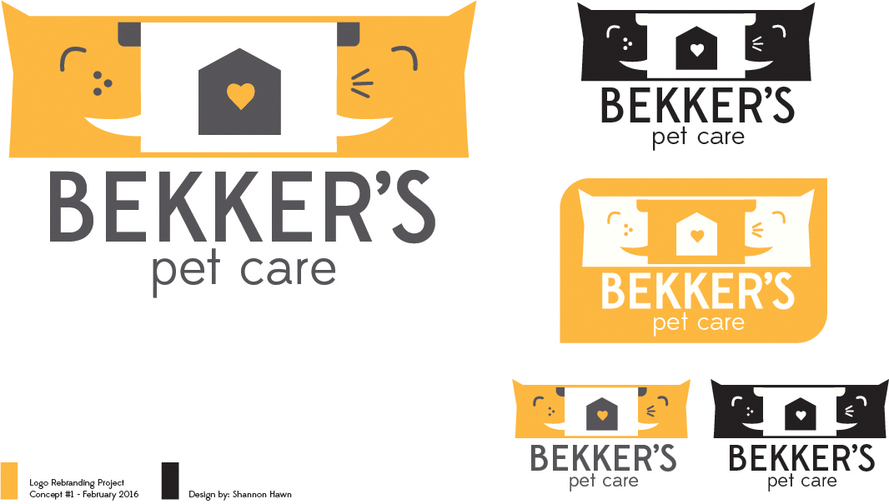
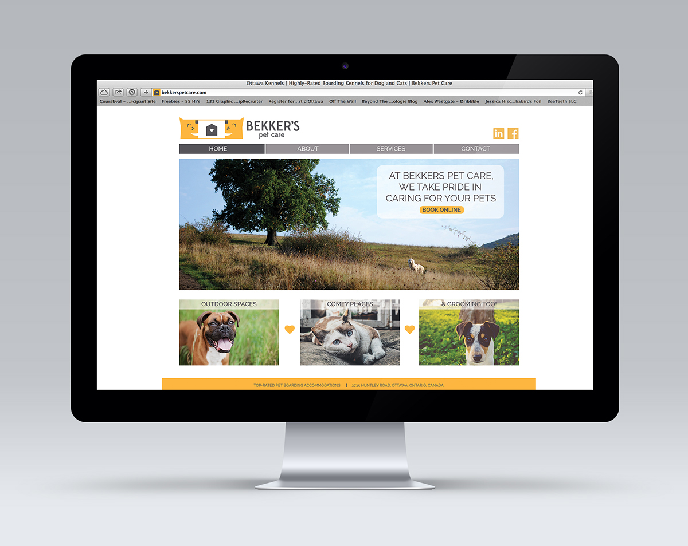

Bekker's Pet Care Logo Redesign



For this project I rebranded an existing company. Bekker's Pet Care is a boarding kennel for cats and dogs. After doing market research I created a logo of a dog and cat sharing their enthusiasm to go to the kennel with their mouths forming a speech bubble. It was important to show that this was a place that a pet would enjoy staying at. I also designed corresponding stationary, employee clothing and website.